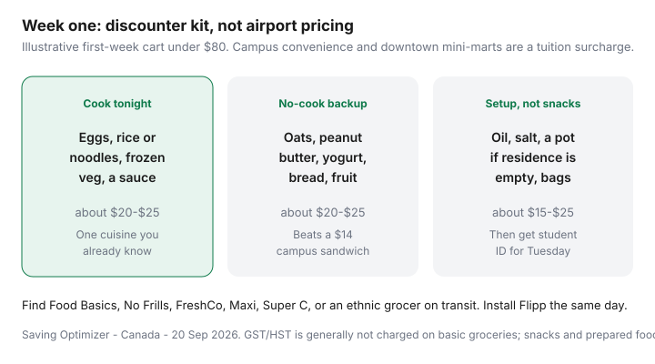

Food & Groceries · Canada
Grocery survival guide for international students in Canada
International students often meet Canadian groceries at the worst possible store: the campus convenience banner, a downtown “international foods” mini-mart, or the airport-adjacent shop that sold them a $6 water. Unit prices look like home until you notice they are in cents per 100 g and the milk is a tourist SKU. First-term food is a solvency issue, not a culture-fail.
This is an arrival guide: a first-week kit, discounters on transit, student ID days, specialty diets on a budget, and roommate cooking. Ontario 10% programs are real at participating Food Basics and Metro stores only — verify. It is not a U.S. dining-plan explainer.
Disclosure: SPC, meal-kit trials, and simple cashback portals are offer types. Saving Optimizer may earn a commission if we later add those links. We do not currently claim Metro, Food Basics, or SPC partnerships. Show student ID; do not pay interest to eat.
Key takeaways
- Get student ID in week one, then shop a discounter — not the residence store.
- A first-week staple kit under about $80 beats a week of campus sandwiches.
- Food Basics Tuesdays and Metro 10% exist only at listed stores. Check the official page.
- Halal, kosher, and home-cuisine ingredients are often cheaper at an ethnic grocer than at a premium banner.
- Share a kitchen with labels and a written Costco split, or do not share meat.
First-week staple kit under a set budget
Assume you can spend about $60–$80 at a discounter if you already have a pot. If the cupboard is empty, add a basic pot, oil, salt, and a reusable bag — still cheaper than seven delivered meals.

- Cook tonight: eggs or tofu, rice or noodles, frozen vegetables, one sauce you recognize.
- No-cook: oats, peanut butter, yogurt, bread, fruit.
- Setup: oil, salt, bags. Basic groceries are generally GST/HST-zero-rated; snacks and prepared foods often are not.
Residence constraints — labelled bins, no mystery Costco meat — are in the shared-kitchen guide.
Finding discounters near campus
Maps + Flipp on the first afternoon. Search No Frills, Food Basics, FreshCo, Superstore, Maxi, Super C, Walmart. Note bus numbers. An ethnic grocer (South Asian, East Asian, African, Middle Eastern, Latin) is often the cheapest path to the food you already cook. Premium Sobeys or Metro attached to campus is a rare trip, even with 10%.
Read the small number on the shelf tag (unit price). That is the Canadian language of “is this a deal.” Weekly loop: fridge → Flipp → one store.
Student ID discount days
Food Basics’ official page (review the week you land) advertises 10% Tuesdays at listed locations only — historically a short Ontario list (Guelph, Hamilton, Kingston, some London, Mississauga, Windsor, and others as published). Metro advertises 10% at participating stores with calendars that change (some daily, some Tuesday). Show ID before the total. Gift cards and alcohol are typical exclusions. Metro’s FAQ has allowed Moi stacking; Food Basics copy says no combining with other offers. Full rules: student grocery discounts.
SPC and campus cards are thin on groceries. Check the live partner list. CIC News and Narcity roundups are orientation colour — they go stale.
Halal, kosher, and specialty needs on a budget
| Need | Usually cheaper | Watch-outs |
|---|---|---|
| Halal meat | Dedicated halal butcher or grocer; some discounter frozen lines | National banner “halal” SKUs can be pricey. Compare /kg. |
| Kosher | Kosher grocers in larger cities; planned lists | Campus convenience kosher snacks are airport-priced. |
| Home spices, rice, pulses, tofu | Ethnic grocers; 10 lb bags if you have a dry bin | Do not buy a 10 kg rice sack for a mini-fridge household unless you can store it. |
| Vegetarian / vegan defaults | Eggs or tofu, lentils, frozen veg, peanut butter | Mock-meat brands at Metro are a treat, not a staple. |
Avoiding airport-pricing convenience stores
If the store is inside a transit station, a tourist strip, or the residence lobby, assume a surcharge. Walk ten minutes. Bring a bag (some stores still charge). Do not convert jet lag into a convenience-store pantry of imported cookies. That is how first-month cash disappears before tuition extras hit.
Two-store rule for month one: one discounter for Canadian staples, one ethnic grocer for the cuisine you can cook half-asleep. A third store is tourism.
Shared cooking with roommates
Cook together only with a written cost split and labelled leftovers. A “we’ll figure it out” Costco chicken is how friendships and food both die. Rotation dinners (you cook Monday, they cook Wednesday) beat four people each buying a wilted salad. Waste systems: fridge audit and FIFO.
A short meal-kit trial can teach Canadian ingredient names. Then cancel and buy those items on Flipp — trial framework.
Sources & date stamps
- Food Basics official student-discount page; Metro student program FAQ (ID, stacking, exclusions) — re-check when you arrive.
- CIC News (Nov 2024) and Narcity student-discount features — orientation lists, not live policy.
- CRA/GST notes: basic groceries generally zero-rated; snacks and many prepared foods taxable — look at the till.
- Our residence, $300, and weekly-system guides for the ongoing semester.
Frequently asked questions
How much should an international student budget for a first grocery week in Canada?
A discounter first-week kit can land under $80 if you already have a pot and you skip campus convenience. Add more if you must buy a basic pan, oil, and salt from nothing. Downtown mini-marts can blow that on snacks alone.
Do I need a SIN to get a student grocery discount?
No. Participating Food Basics and Metro programs ask for valid post-secondary student ID, shown before the cashier totals. Get the card or digital ID in week one. The discount is an ID problem, not an immigration form.
Where should I shop near campus?
Look for Food Basics, No Frills, FreshCo, Maxi, Super C, Walmart, and ethnic grocers on transit - not the residence convenience store. Install Flipp and compare unit prices. Premium banners are a rare stop.
How do I find affordable halal, kosher, or specialty ingredients?
Start with an ethnic grocer or a dedicated halal/kosher butcher on transit, then compare unit prices to the flyer at a discounter. Specialty stores are often cheaper on the cuisine you already cook and expensive on Canadian packaged snacks. Share bulk spices only with people who will pay you.
Should I use meal kits or Uber Eats when I first arrive?
A short meal-kit trial can teach Canadian grocery vocabulary. Delivery apps are the expensive default when you are tired. Build the no-cook shelf in week one so jet lag does not become a $20 sandwich habit.